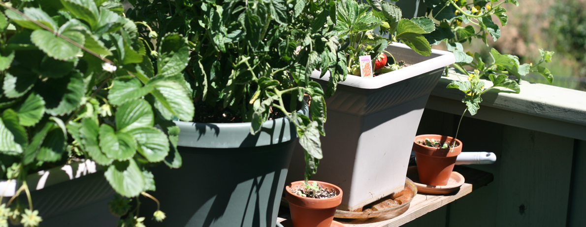
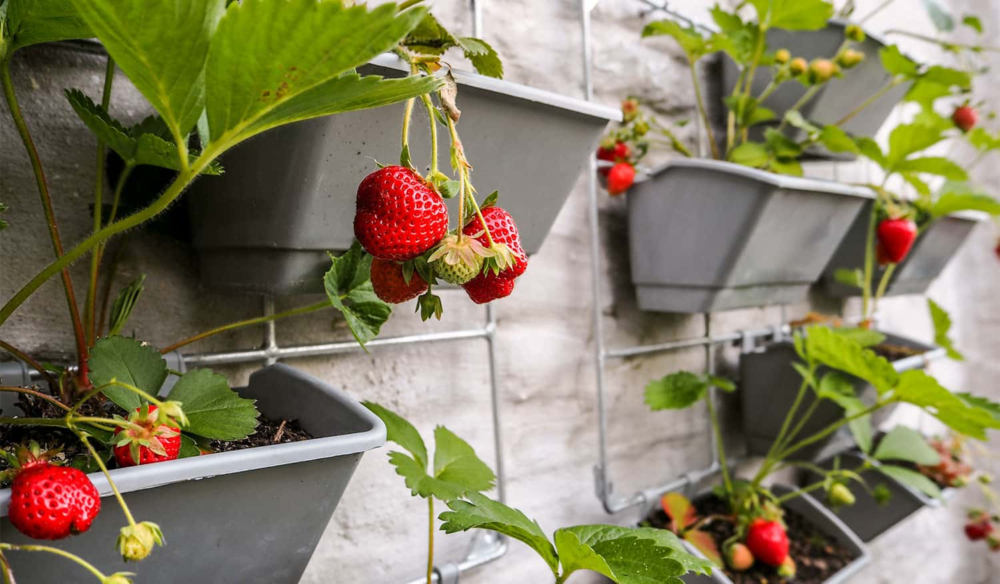
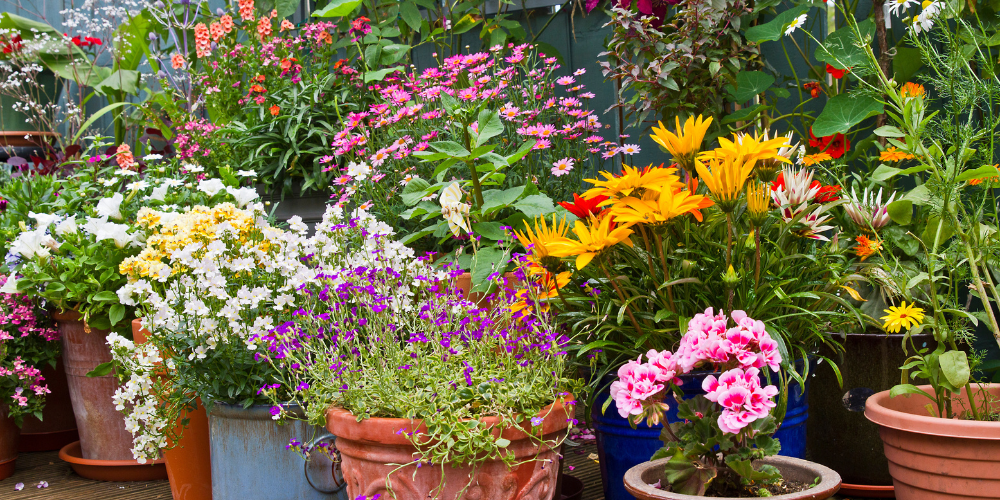

What is Urban Container Gardening?
Container gardening is when plants are grown in containers such as pots rather than into the ground. Container gardening is for urban areas where having an actual garden is not possible. It is space-efficient and mobile, so it can be arranged to fit wherever you choose to set up your garden. The beauty of container gardening is that you can reuse old containers around your home for your garden, so it’s budget and environmentally friendly. Container gardening is also great because it benefits urban birds!


Benefits
- Fresh food close to home
- Low startup cost and scalable
- Accessible for beginners and mobility-limited gardeners
- Improves air quality and mental well-being
- Supports biodiversity in urban areas
What kinds of plants can you grow?
Many types of plants can be grown in urban areas. Some of them produce various berries and flowers. Below you can find a list of popular berry plants to attract and feed birds. Follow the links for instructions on how to plant them!


Quick Links
Ready to start? Jump to the Beginner's Guide, or Contact Us. See Resources page